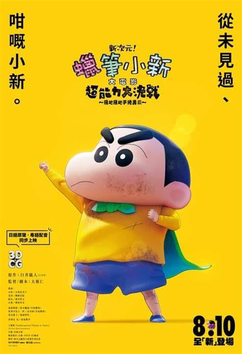

-
SHIN MOVIE
Shin Cậu Bé Bút Chì: Đại Chiến Siêu Năng Lực Sushi Bay Shin Jigen! Crayon Shin-chan The Movie Chōnōryoku Dai Kessen: Tobetobe Temakizushi 2023 Full HD Vietsub Thuyết Minh là một bộ phim hoạt hình Nhật Bản đặc trưng về một cậu bé Shin, đứng cùng với các nhân vật đồng trang lứa như các nhóc tỳ trong "South Park". Là một cái nhìn châm biếm, hài hước về cuộc sống gia đình hiện đại dành cho người lớn. Với sự sáng tạo về cốt truyện và đồ họa, bộ phim là một hiện tượng văn hóa toàn cầu và là một trong những loạt manga Nhật Bản bán chạy nhất mọi thời đại. Bộ phim trước đây đã được phát sóng trên Adult Swim và hiện đã được tái bản. Trong phần mới nhất "3DCG! Shin - Cậu Bé Bút Chì: Đại Chiến Siêu Năng Lực ~ Sushi Bay" (Shin Jigen! Crayon Shin-chan The Movie Chōnōryoku Dai Kessen: Tobetobe Temakizushi), câu chuyện tập trung vào hai nguồn sáng đặc biệt từ vũ trụ, mang theo siêu năng lực đặc biệt và đã đến Trái Đất. Một trong 2 nguồn sáng đó tình cờ "nhập" vào cậu bé Shin, khiến cặp mông núng nính của cậu trở nên nóng bỏng và có khả năng điều khiển những đồ vật xung quanh theo ý muốn. Cuộc phiêu lưu của Shin bắt đầu khi cậu phát hiện ra khả năng siêu năng lực mới của mình. Với sự giúp đỡ từ những người bạn thân thiết, Shin bắt đầu tận dụng siêu năng lực của mình để trải qua những trải nghiệm thú vị và hài hước. Tuy nhiên, sức mạnh này cũng mang lại không ít rắc rối và tình huống dở khóc dở cười khi Shin không kiểm soát được khả năng điều khiển đồ vật xung quanh. -
- Phân Loại:
- T13 - PHIM DÀNH CHO KHÁN GIẢ TỪ 3 TUỔI TRỞ LÊN
-
- Đạo diễn:
- Hitoshi Õne
-
- Diễn viên:
- Yumiko Kobayashi, Miki Narahashi, Aoi Morikawa, Satomi Kourogi, Suzuki Mogura
-
- Thể loại:
- Phim Hoạt Hình, Phim Chiếu Rạp, Phim Anime, Phim Sắp Chiếu
-
- Khởi chiếu:
- 25/08/2023
-
- Thời lượng:
- 94 phút
-
- Ngôn ngữ:
- Phim có phụ đề
-
- Giờ chiếu:
- 12:00